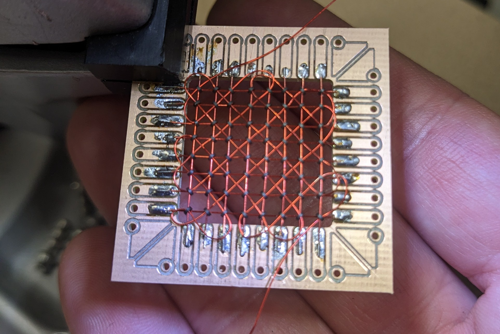

This is nowhere near complete but these are some notes on making core memory planes.
- You can buy new old stock cores from eastern Europe on ebay. These perform *much* better than modern ferrite. They're hard ferrite with a large hysteresis, so they form a large
inductive voltage spike when their magnetic field flips and are easier for your sense circuit to see.
- You can space your x/y lines however you like, but I recommend spacing them a bit more than the OD of the core. The core will only show about 0.8 of its length because it's turned at 45 degrees,
but having a little space between them makes it much easier to fabricate, and if they're so tight they're physically touching, one core magnetizing will affect the cores it's touching.mm pitch I made mine
on a 2.54mm pitch because headers for that are cheap.
- Choose your wire gauge as a function of your current. You'll need to characterize this if you don't know it. Thinner wire is easier. I use 32ga for X/Y and 34 or 36 for sense.
- Enameled magnet wire is easy to strip. Glob up solder on the soldering tip and push the end of the wire into the solder glob. It'll strip off and tin in one step.
- I found it easiest to cut all the X wires and solder them down on one end, load the right number of cores onto each wire, then solder down the other end. If you can hold the board in a board
vise, you can pull the wire tight with tweezers just as you solder it down and get a very neat looking assembly. Counterpoint: if you lift up the wire a little on either end so the cores all hang about
0.5mm above the PCB top face, you can feed the next run of wires in underneath them and it is much easier to get the wires through hanging cores, than by lifting them and threading through.
- The cores are quite delicate. I've snapped ones by sticking the tweezer tips inside it and letting go, so just the tweezer spring was all the force exerted on the inner diameter of the core.
With that said, I used very fine tip steel tweezers to do all my work, one pair with straight tips and one pair with 45 degree curvature.
- For feeding the Y lines through, I'd put a little solder on the far end pad, not strip the wire and cut it at an angle so it had a slightly pointed tip, then feed it through the cores. See above note about
hanging vs lifting cores. For my design (single sense line through every core zigzag style) I have to offset sequential cores perpendicularly. There are other sense line topologies that don't do this,
just so you know, but they don't look as cool. Thread the Y line in until it touches the X, push a core up, and as one side hits the Y wire, it'll cant, and you can feed the Y through. The corollary is that you
want to push alternating cores up above and retain down below the incoming Y line, so they'll cant the right directions.
- Feeding wire through is a little like lockpicking. If it jams, you go back and touch all the previous cores until you find the one that's tight, and poke at it a little, and it'll unlock so the
wire can continue feeding through. It'll run all the way through and you can solder it down on both ends.
- When you pull the sense line through, you can run it down the middles of all the cores diagonally. Again this is easier if they're hanging than if you're lifting them but it's surprisingly hard to work
underneath the board. As you thread the wire through, be aware that the inner edges of the ferrite beads are sharp. If you're not feeding the wire pretty carefully, they'll strip the enamel insulation right off.
That may not be a big issue. The X and Y lines are insulated, so you'd need to have two insulation failures touch. I found it worked well to use something like a toothpick to guide the wire into the first core
as I pulled it through.